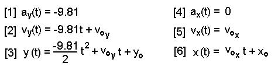
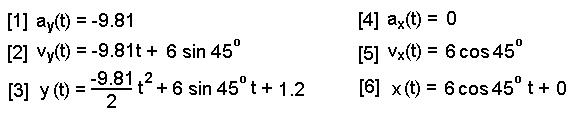
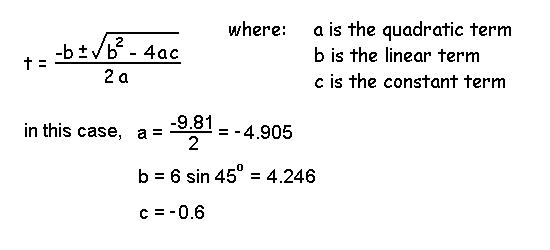
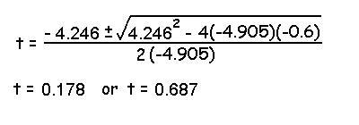
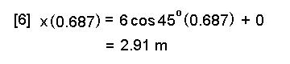

Projectiles
A projectile is any object that is given an initial velocity and then allowed to move under the influence of gravity. Projectile motion is an important part of sport biomechanics because of the use of balls, javelins, pucks, arrows, etc. The human body itself can be considered a projectile whenever it is airborne (i.e. running, jumping, falling, etc.). The path followed by the center of gravity of the object is always parabolic. We will use the methods taught in the calculus lecture to dervive the equations of projectile motion.
Example: Find the time in
the air for a man jumping up on the platform and how far he will travel horizontally.

Step 1: The first step in every projectile problem is to write the equations of motion.
Since gravity is the only force acting on the subject, the acceleration in the y direction is -9.81 m/s/s and the acceleration in the x direction is 0 m/s/s. We use integral calculus to yield the velocity and displacement equations.

Step 2: Now we substitute the given information of this particular problem.

Step 3: This is the most difficult step because we must look at our six equations of motion and decide which one or ones will help us find the answer to the question that we have been asked. In this case we have been asked to find the time in the air. Although time is part of all of the equations, we know that at the instant of landing, the vertical displacement is 1.8 meters. Equation [3] is the vertical displacement equation is we must solve for t when y(t) = 1.8.

In order to solve for t in the above quadratic equation, we must use the determinate formula below.

Solving the equation above leaves two possible answers for t (using the positive and negative roots).

The jumper's height was 1.8 meters high at two instants in time. We want the later time because that is the time of landing. At the earlier time, the jumper was travelling upward. If we are ever uncertain about the direction, we can substitute the time into equation [2] and if velocity is positive, the motion is upward and if the velocity is negative, the direction is downward. Therefore, the time in the air is 0.687 seconds.
We were also asked to calculate the horizontal displacement on landing. We can use equation [6] which is the horizontal displacement function knowing the time of landing is 0.687 seconds.
